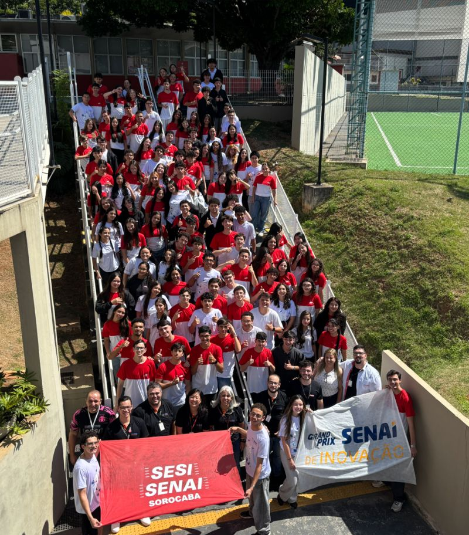

CURSO TÉCNICO • SENAI
ESTE CURSO
É PARA VOCÊ?
Descubra através dessa pequena apresentação de pontos positivos e negativos, para que, através da tecnologia, você decida escolher ransformar problemas em soluções projetos e trabalho em equipe.
CONHEÇA O CURSO
01 / O CURSO
MAIS DO QUE
APRENDER A PROGRAMAR.
O Curso Técnico em Desenvolvimento de Sistemas prepara estudantes para desenvolver, testar e implantar sistemas computacionais.
Durante a formação, aprendemos através de projetos e situações práticas, aproximando o conhecimento da realidade do mercado de trabalho e da indústria.
Curso Técnico
Aprender Fazendo
Lógica
Aprenda a pensar e resolver problemas.
Front-End
Crie interfaces e aplicações para a web.
Back-End
Desenvolva sistemas e suas funcionalidades.
Banco de Dados
Organize e manipule informações.
Mobile
Conheça o desenvolvimento para dispositivos móveis.
Projetos
Transforme conhecimento em soluções.

FAZENDO.
02 / APRENDIZADO
AQUI, VOCÊ
NÃO APRENDE SÓ OLHANDO.
No SENAI, o aprendizado acontece na prática. Projetos, desafios e situações-problema fazem parte da rotina do curso.
Projetos
Transformamos conhecimento em soluções.
Desafios
Problemas fazem parte do processo.
Trabalho em equipe
Aprendemos a construir juntos.
Apresentações
Aprendemos a comunicar nossas ideias.
03 / DESAFIOS
NEM SEMPRE
É FÁCIL.
Programar é resolver problemas. E nem sempre a primeira solução funciona.
Prazos
Aprender a organizar o tempo e cumprir responsabilidades.
Trabalho em equipe
Colaborar, ouvir ideias e dividir responsabilidades.
Resolução de problemas
Encontrar erros e buscar diferentes soluções.
Autonomia
Pesquisar, estudar e aprender a encontrar respostas.
04 / COMPETÊNCIAS
VOCÊ DESENVOLVE
MAIS DO QUE CÓDIGO.
Pensamento analítico
Criatividade
Comunicação
Trabalho em equipe
Autonomia
Resiliência
05 / OPORTUNIDADES
E DEPOIS
DO CURSO?
O conhecimento adquirido durante a formação pode abrir diferentes caminhos na área de tecnologia.
Desenvolvedor Web
Desenvolvimento de sites e aplicações para a web.
Desenvolvedor de Sistemas
Criação e manutenção de sistemas computacionais.
Analista de Qualidade
Testes e garantia da qualidade dos sistemas.
Service Desk
Suporte e resolução de problemas relacionados à tecnologia.
06 / SENAI
POR QUE
SENAI?
LABORATÓRIOS
Ambientes preparados para colocar o conhecimento em prática.
PROJETOS
Aprendizado baseado em projetos e situações reais.
INDÚSTRIA
Formação conectada às necessidades do mercado de trabalho.
METODOLOGIAS ÁGEIS
Organização e desenvolvimento colaborativo de projetos.
COMECE A CONSTRUIR O SEU FUTURO
SEU FUTURO EMPRESARIAL
COMEÇA COM CÓDIGO?
Talvez o próximo passo deva ser o seu.
CONHEÇA O CURSO